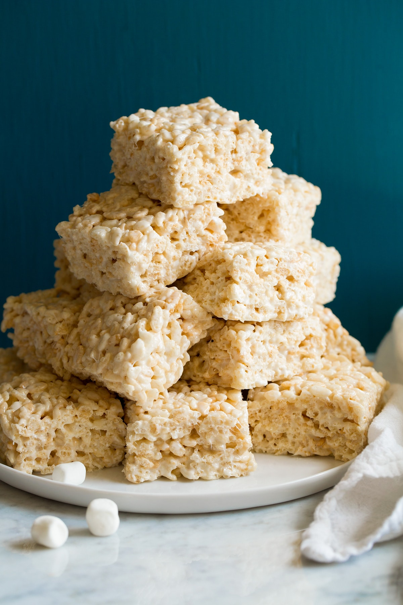

Rice Krispie

Description
classic, delicious snack has been making memories for kids and parents alike for generations.
Steps
- In large saucepan melt butter over low heat. Add marshmallows and stir until completely melted. Remove from heat.
- Add KELLOGG'S RICE KRISPIES cereal. Stir until well coated
- Using buttered spatula or wax paper evenly press mixture into 13 x 9 x 2-inch pan coated with cooking spray. Cool. Cut into 2-inch squares. Best if served the same day.